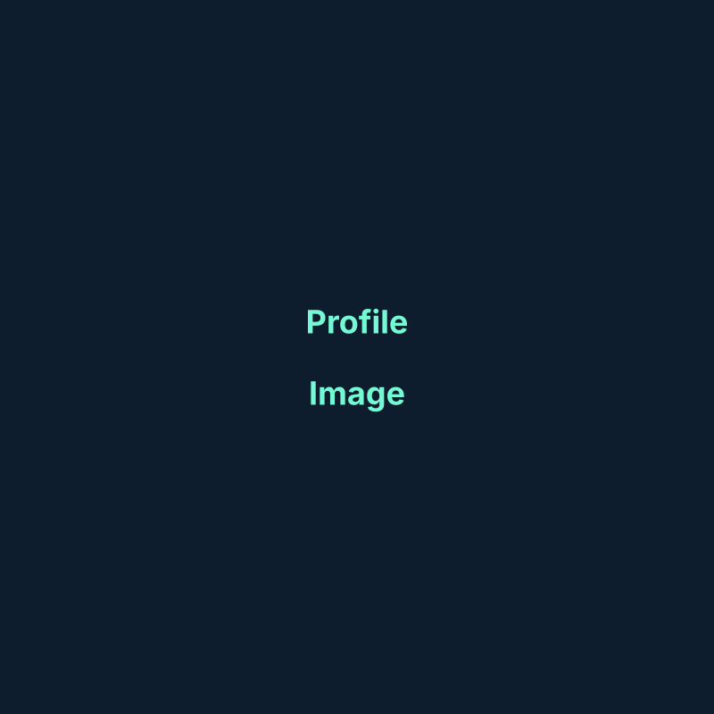

Project
Project title
Short project description. Replace with project details, contributions, and outcomes.
Hello — this is a template based on a portfolio layout. Replace this text with Jasaman's own bio, background, and focus areas. The layout, styles, and interactions are ready to go.

About me
Replace this paragraph with Jasaman's location, background, and the work she is most interested in.
Add a couple more lines describing notable skills, interests, or the types of roles and projects she prefers.
Core strengths
Describe a core skill or domain area for Jasaman here.
Translate ideas into practical, deliverable outcomes.
Research, user testing, and validation approaches.
Cross-disciplinary teamwork and communication.
Process improvements and workflow optimization.
Mentoring and leading projects or small teams.
Featured work
Short project description. Replace with project details, contributions, and outcomes.
Another short summary that outlines the challenge, approach, and result.
Summarize insights, findings, or impact from a study or case work.
How collaboration produced results and what role Jasaman played.
Experience
Short description of current role and responsibilities.
Brief notes about previous experience.
Background foundation and relevant training.
Insights
Short perspective on a topic of interest.
Why clear execution and communication matter.
Improvements that drive better outcomes.
Let’s connect
Interested in roles and partnerships where thoughtful design and practical execution create lasting value.